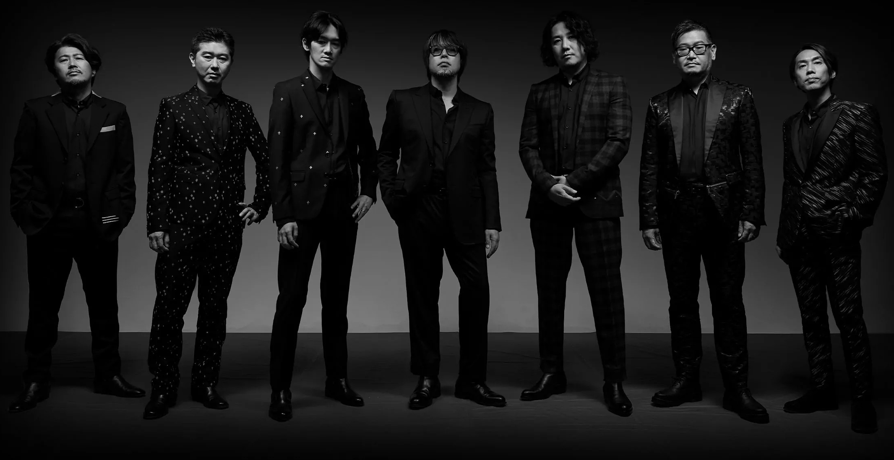

About Ryu Ga Gotoku Studio
With over 12 million units sold worldwide since its creation in 2005, the Yakuza / Ryu Ga Gotoku series was created with the core concept of “Entertainment geared towards mature audiences” in mind, this series portrays the life of relatable people living in Japan’s red-light districts. Ryu Ga Gotoku Studio excels at bringing players into a true-to-life realization of modern Japan while exploring themes of love, humanity, and betrayal, creating an experience unlike any other in digital entertainment.

